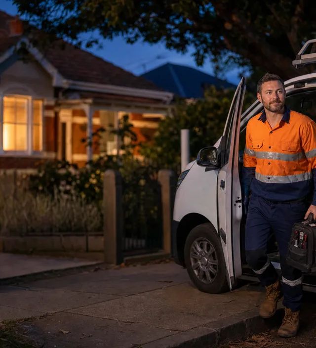

Emergency Plumber Western Suburbs Melbourne
Burst pipe, blocked drain or gas smell in Footscray, Yarraville or Williamstown? A licensed local plumber is typically on-site within 55–70 minutes — any time, day or night.

24/7 emergency plumbing across Melbourne's western suburbs
We cover Footscray, Yarraville, Seddon, Williamstown, Newport and Altona — dispatching the nearest van as soon as you call, including after hours and public holidays.
Melbourne's western suburbs carry some of the city's oldest residential plumbing. The post-war workers' cottages and inter-war bungalows of Yarraville and Seddon often have original clay sewer lines running under narrow laneways — root intrusion and fractures are common. Bayside Williamstown adds corrosion from salt air to the mix, particularly in copper hot water lines and galvanised yard connections. Meanwhile, newer medium-density developments in Footscray bring shared stacks and building manager access requirements.
Whether you're in a bungalow off Anderson Street, Yarraville, a terrace near Williamstown beach, or an apartment on Hopkins Street, Footscray, you get the same upfront fixed quote before work starts — no surprise call-out fees.
Services we offer in Melbourne's western suburbs
Fast, permanent fixes for the problems that can't wait — handled by licensed plumbers across Footscray, Yarraville, Williamstown and beyond.
Blocked drains
High-pressure jet clearing for clay sewer pipes, tree-root blockages and shared stacks across the western suburbs.
Learn moreBurst & leaking pipes
Fast leak detection in cottages, bungalows and apartments — stopping water damage before it spreads.
Learn moreHot water systems
Same-day repair and replacement for gas, electric and heat-pump units across western Melbourne.
Learn moreGas leaks & fitting
Licensed gas fitters for leaks, smells and appliance connections — act fast if you smell gas.
Learn moreBlocked toilets
Overflowing or blocked toilets fixed fast, with parts on the van for western suburb homes.
Learn moreRoof & storm leaks
Emergency roof plumbing for iron-roofed cottages and bungalows when Melbourne weather turns.
Learn moreWestern Melbourne suburbs we cover
From the Maribyrnong River to Port Phillip Bay — we cover all major western postcodes.
- Footscray (3011)
Hopkins Street, Barkly Street and Maribyrnong riverside apartments and mixed-use buildings.
- Yarraville & Seddon (3013 · 3011)
Anderson Street bungalows, Charles Street and Somerville Road terrace precincts.
- Williamstown & Newport (3016 · 3015)
Bayside cottages, Nelson Place heritage strip and beach-side residential streets.
- Altona & Laverton (3018 · 3028)
Outer western residential and light industrial plumbing across the Hobsons Bay LGA.
Also nearby: Melbourne CBD, Port Melbourne and South Melbourne. See all areas we cover.
Emergency plumbing response across western Melbourne
| Situation | Typical response | Available |
|---|---|---|
| Burst pipe / major leak | 55–70 min | 24/7 |
| Blocked drain / toilet overflow | 55–70 min | 24/7 |
| Gas smell / suspected leak | Priority dispatch | 24/7 |
| No hot water | Same day | 24/7 |
Why western Melbourne locals call us
Footscray, Yarraville and Williamstown residents choose us for fair pricing, honest diagnosis and licensed workmanship on heritage and modern homes alike.
Call [TELEFONE]- Western suburbs reach
We cover Footscray to Williamstown — no extra travel fees, fixed price upfront.
- Upfront fixed pricing
You approve the price before we start. No hidden call-out surprises.
- VBA licensed & insured
Fully licensed Melbourne plumbers and gas fitters — Lic. [LICENCA].
- Heritage pipe know-how
Clay sewers, galvanised lines and inter-war drainage — we handle western suburb homes.
- Fully-stocked vans
Most western suburb jobs finished in one visit, with parts on board.
What western Melbourne residents say
"Burst pipe in our Yarraville bungalow at 6am — they were there within the hour, fixed it with a fair price and explained why the old galvanised fitting failed. Really impressed."
"Blocked sewer at our Williamstown beach house on a long weekend. They made it out, jet-cleared the roots and left the yard clean. Can't ask for more."
Related plumbing advice
Tree roots in your pipes
How roots invade old clay pipes, warning signs and how we remove them — essential for western suburb homes.
Read guideHow much does an emergency plumber cost?
Call-out fees, after-hours rates and how to avoid surprises across Melbourne.
Read guideWhat to do when a pipe bursts
Five quick steps to limit water damage while help is on the way.
Read guideNeed a plumber now? Call [TELEFONE] or see our Melbourne emergency plumber home page.
Frequently asked questions — Western Suburbs Melbourne
How fast can you reach Melbourne's western suburbs?
Our emergency plumbers are typically on-site across Melbourne's western suburbs — including Footscray, Yarraville and Williamstown — within 55–70 minutes of your call, 24 hours a day.
Which western suburbs of Melbourne do you cover?
We cover Footscray (3011), Yarraville (3013), Seddon (3011), Williamstown (3016), Newport (3015), Altona (3018), Laverton and surrounding western postcodes.
Do you handle old clay pipes in the western suburbs?
Yes. Many western suburb homes have original clay sewer pipes and galvanised water lines dating back to the 1880s–1940s. Our plumbers carry the right equipment for heritage pipe work alongside modern repairs.
How much does an emergency plumber cost in Melbourne's western suburbs?
We provide upfront, fixed pricing before any work begins — no hidden call-out surprises. The final cost depends on the job type and time of day; you approve the price before we start.
Are your western Melbourne plumbers licensed?
Yes. All work is carried out by fully licensed (VBA) and insured Melbourne plumbers, with workmanship guaranteed.